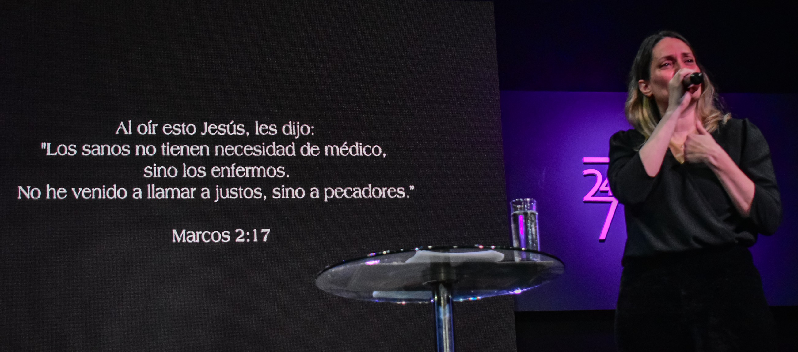
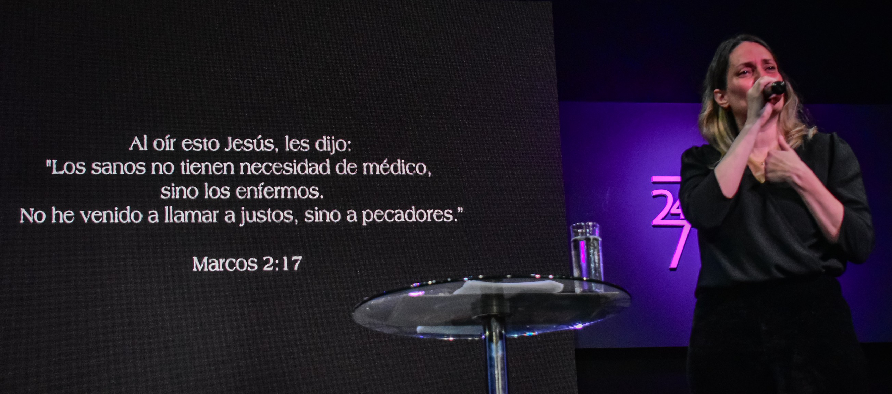

Somos parte de Casa de Dios Corrientes, una comunidad cristiana evangélica nacida y establecida
en la ciudad de Corrientes (Provincia de Corrientes, Argentina). Desde sus comienzos, hemos
creído que cada persona tiene un propósito divino y que la iglesia es un lugar de encuentro,
esperanza y transformación.
Cómo surgimos
Casa de Dios Corrientes nació con la convicción de ser “un hogar” para quienes buscan a Dios, un
espacio de fe, amor y restauración. Con el tiempo, esta convicción se fue plasmando en una
comunidad creciente, que no solo se reúne para adorar, sino que también se compromete con las
necesidades reales de nuestra ciudad. Nuestra sede local se ubica en avenida Raúl Alfonsín 4043
(ex avenida Centenario), en la capital correntina.
Una fe con
compromiso social
Comprendimos que la fe no puede quedarse solo en palabras: debe transformarse en acciones. Ese
fue el motor para la creación del proyecto "Ángeles del Puente". Esta iniciativa surgió como
respuesta a una realidad dolorosa: personas que, sin esperanza, llegan al Puente General Manuel
Belgrano —que une Corrientes con Chaco— con la intención de quitarse la vida.
Desde el 6 de agosto de 2023 comenzamos a patrullar ese puente, día y noche, bajo el lema
“24/7 oramos por tu milagro”. Voluntarios se turnan para recorrer los 1.700 metros del viaducto,
detectar situaciones de crisis y brindar contención, escucha y acompañamiento.
Nuestra misión y
valores
- Vida, esperanza y
dignidad: defendemos la vida como un valor sagrado. Creemos que todas las
personas merecen una segunda oportunidad, escuchar amor, y encontrar comunidad.
- Comunidad abierta y
solidaria: Casa de Dios es más que un edificio: es una familia espiritual donde
cada persona tiene un lugar, un propósito, y una mano amiga.
- Acción social
concreta: No nos quedamos en la oración: nuestras manos se movilizan —ya sea
para proteger vidas, acompañar en crisis, o ofrecer apoyo emocional y espiritual.
- Compromiso continuo:
Los patrullajes no son excepcionales, sino constantes. Voluntarios caminan día y noche, con
turnos rotativos, porque consideramos que ese puente —y la gente que lo atraviesa— lo
necesita.
- Amor que transforma:
Queremos que nuestra ciudad vea lo que la fe también puede hacer en la tierra: restauración,
contención, esperanza.
Nuestra ubicación
geográfica
Hoy, nuestra sede central en Corrientes funciona en avenida Raúl Alfonsín 4043. Desde allí,
servimos a la comunidad local y extendemos nuestro alcance más allá: visitamos sectores
vulnerables, acompañamos personas en crisis, realizamos actividades de apoyo espiritual y
social, y nos mantenemos abiertos para quienes buscan un camino de fe y esperanza.
 
